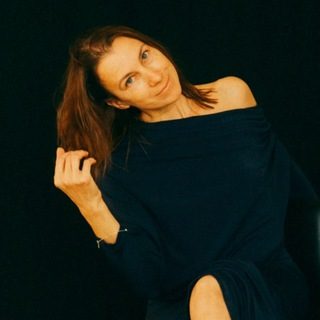

Сначала — знакомство
Напишите Анне, что привело вас на эту страницу и о чём хочется узнать больше.
Пространство для знакомства с собой
Екатеринбург / концепция группы
Остановиться. Услышать себя. Найти слова для того, что сейчас важно.
Поговорить с Анной ↗Условия и возможность участия — лично.

Анна Зуева / знакомство
Человек рядом
Я Анна, психолог Processwork. В моём публичном профиле — творческие психологические сессии, очно и онлайн.
«Её земля» здесь — визуальная идея страницы о группе: с вниманием к личному опыту, вопросам и собственному темпу. Содержание проекта и возможность участия уточняются в личном разговоре.
Познакомиться в Telegram ↗Небольшой ориентир
Точка начала
В первом сообщении можно назвать ситуацию, в которой хочется разобраться. Спросите Анну, с чего начать знакомство и какой формат возможен.
Это ориентир для разговора, не диагностика и не рекомендация терапии.
Право выбирать
Напишите Анне, что привело вас на эту страницу и о чём хочется узнать больше.
Уточните формат, подход, возможность участия и организационные условия.
Задайте оставшиеся вопросы и решите, подходит ли вам предложенный вариант.
До знакомства
Это название группы из исходного брифа и основа демонстрационной концепции. Программа, ведущая, правила и актуальный статус проекта требуют согласования с Анной.
Мы не публикуем непроверенные объявления о наборе. Узнайте у Анны лично, есть ли сейчас такой формат и возможность участия.
Город Екатеринбург указан в исходном брифе. Место, расписание, стоимость и длительность на демо-сайте не подтверждаются — уточняйте их напрямую.
В публичном профиле Анны указаны творческие психологические сессии очно и онлайн. Доступность и соответствие формата вашему запросу обсудите в Telegram.
У любого пути есть начало